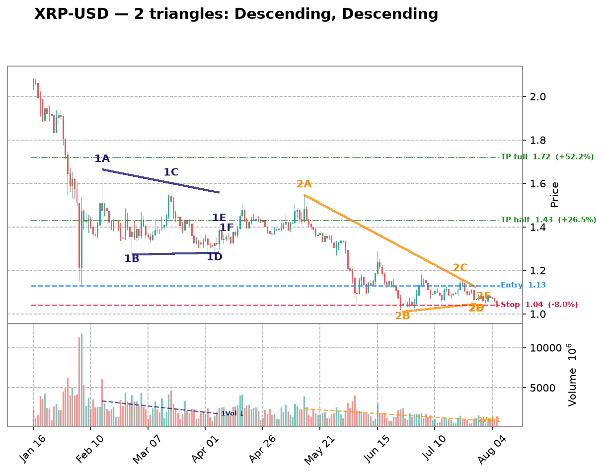
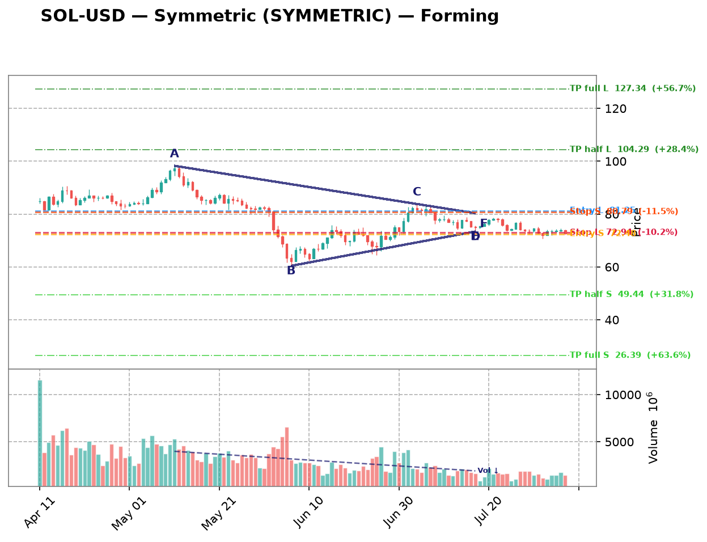
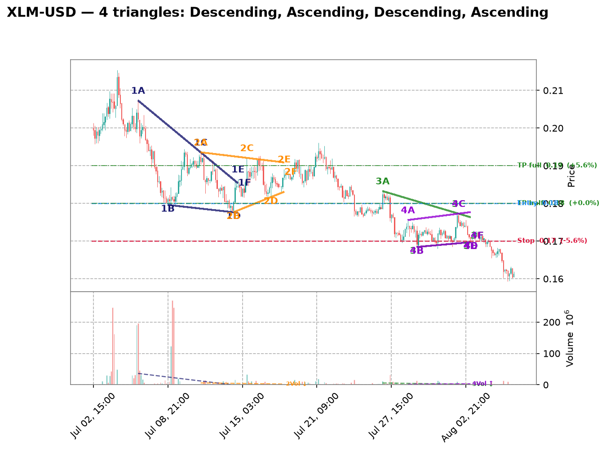
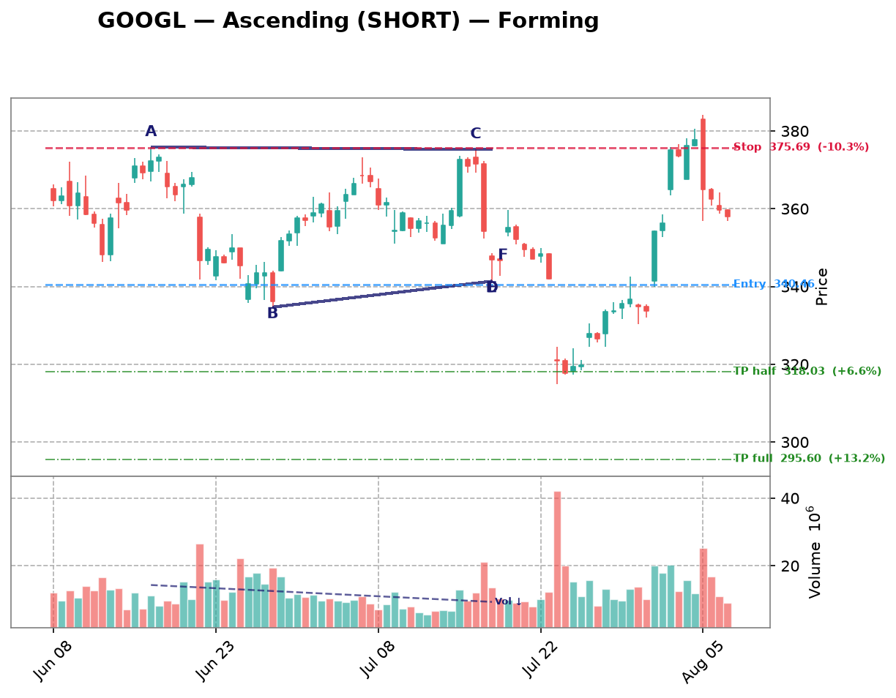
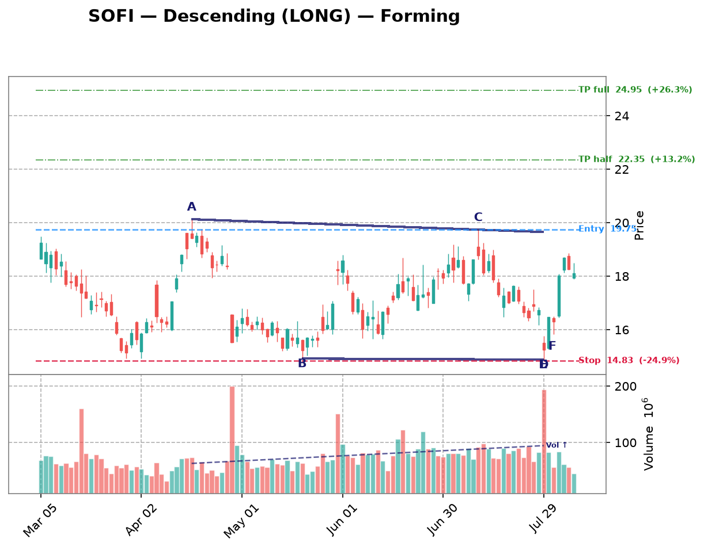

| Date | Symbol | TF | Pattern | Dir | Verdict | Claude Pattern | Claude Dir | Conf | Rec |
|---|---|---|---|---|---|---|---|---|---|
| crypto 10 patterns | |||||||||
| 2026-10-02 | DOGE-USD | 1d | Descending | LONG | Disputed | ? | ? | Certainty: 80 | — |
Chart  Claude Notes The right edge of the chart (late June through early August) shows price flattening out around 0.07-0.075 after a prolonged downtrend, but this looks more like a flat consolidation/basing pattern than a descending triangle. There's no clear descending upper trendline with lower highs converging into a flat support - instead both highs and lows are roughly flat/range-bound in a narrow band near 0.07. A descending triangle requires a clearly declining series of lower highs pressing against horizontal support, which isn't evident here; the recent candles show sideways chop rather than compression toward an apex. The overall chart structure is dominated by a large downtrend from Jan-Jun with a rally bump in April-May, and the recent price action is simply low-volatility consolidation at the bottom, not a triangle with converging trendlines and multiple clean touches on each side. Presence certainty 80/100 — how sure Claude is that its found/not-found call is correct | |||||||||
| 2026-10-02 | VET-USD | 1d | Descending | LONG | Disputed | ? | ? | Certainty: 75 | — |
Chart  Claude Notes The right side of the chart (late June through July) shows price trading in a tight, flat, range-bound consolidation around 0.0045-0.0050 with no clear converging trendlines. Highs and lows are roughly horizontal rather than converging - there's no descending upper trendline (lower highs) to pair with a flat support line. This looks more like a flat/rectangular consolidation after a sharp downtrend (Apr-Jun selloff) rather than a descending triangle. The algorithm's flag seems to be mistaking general sideways price compression for a true triangle, but I don't see distinct lower highs forming a descending resistance line - the recent candles are mostly oscillating in a narrow horizontal band with similar highs and lows, not a converging wedge. Presence certainty 75/100 — how sure Claude is that its found/not-found call is correct | |||||||||
| 2026-10-02 | ETH-USD | 1d | Symmetric | SYMMETRIC | Disputed | ? | ? | Certainty: 75 | — |
Chart  Claude Notes The right side of the chart (late June through July) shows price recovering from a low around 1550 and then trading in a fairly flat, narrow range between ~1800 and 1950 for several weeks. This looks more like consolidation/basing with roughly parallel boundaries rather than a converging triangle - there's no clear narrowing of range into an apex. Highs are flat (~1950) and lows are flat (~1830-1850), which resembles a rectangle/range rather than a symmetric triangle with converging trendlines. I don't see a clear descending upper trendline or rising lower trendline converging toward a point. The algorithm likely misread the sideways consolidation as a triangle. Presence certainty 75/100 — how sure Claude is that its found/not-found call is correct | |||||||||
| 2026-10-02 | XRP-USD | 1d | Descending | LONG | Disputed | ? | ? | Certainty: 72 | — |
Chart  Claude Notes The right-side price action (Jun-Aug) shows a sharp decline from ~1.45 to ~1.05, followed by a period of low-volatility sideways consolidation roughly between 1.0 and 1.2. There isn't a clear converging structure with a flat support and descending resistance - rather price looks like it's ranging/flatlining after a downtrend, with roughly equal highs and lows (more like a flat consolidation box or minor channel than a converging triangle). Touch points on a descending upper trendline are weak - the recent highs (mid-Jun, early-Jul, late-Jul) are roughly flat around 1.15-1.2 rather than clearly descending, and lows are also flat around 1.0-1.05 rather than rising. This looks more like a rectangle/range than a descending triangle with clear convergence toward an apex. I don't see strong enough evidence of a converging apex forming near the right edge to confidently call this a triangle. Presence certainty 72/100 — how sure Claude is that its found/not-found call is correct | |||||||||
| 2026-10-02 | SOL-USD | 1d | Symmetric | SYMMETRIC | Disputed | ? | ? | Certainty: 70 | — |
Chart  Claude Notes From late June to late July price trades in a fairly tight, roughly flat range (~72-83) with no clear convergence - highs and lows are both roughly flat/sideways rather than forming converging trendlines. This looks more like a flat consolidation/range than a triangle apex. There's no sequence of distinctly higher lows meeting lower highs; swings are choppy and similar in amplitude throughout the last month, lacking the narrowing wedge shape needed for a symmetric triangle. I disagree with the algorithm's symmetric triangle call - the structure is better described as sideways consolidation/range-bound price action rather than a converging triangle. Presence certainty 70/100 — how sure Claude is that its found/not-found call is correct | |||||||||
| 2026-10-02 | MANA-USD | 4h | Ascending | SHORT | Disputed | ? | ? | Certainty: 80 | — |
Chart  Claude Notes The right side of the chart shows price drifting sideways-to-slightly-down around 0.066-0.068 with no clear rising support line or flat resistance converging toward an apex. Highs and lows are both roughly flat/choppy, not forming higher lows (needed for ascending triangle). This looks more like a flat consolidation range or mild downtrend continuation after a step-down from the 0.070-0.075 range earlier in July. No credible convergence of two trendlines is visible near the right edge, so I disagree with the algorithm's ascending triangle flag. Presence certainty 80/100 — how sure Claude is that its found/not-found call is correct | |||||||||
| 2026-10-02 | SAND-USD | 4h | Descending | LONG | Disputed | ? | ? | Certainty: 75 | — |
Chart  Claude Notes Overall chart shows a sustained downtrend from early July through late July, bottoming around 0.0405-0.0410, then consolidating in a fairly flat, choppy range near the right edge (roughly 0.0410-0.0440) with no clear converging trendlines. The right-side price action looks more like a flat/sideways channel with roughly parallel highs (~0.0440) and lows (~0.0410) rather than a descending triangle with lower highs. There's no clear series of progressively lower highs compressing toward a flat support - highs and lows both appear range-bound rather than converging. The algorithm's descending triangle flag seems to misread this consolidation as a triangle, but the pattern lacks the narrowing structure (apex) required for a valid triangle - it's better described as a trading range/rectangle at the lows after the downtrend. Presence certainty 75/100 — how sure Claude is that its found/not-found call is correct | |||||||||
| 2026-10-02 | XLM-USD | 3h | Descending | LONG | Disputed | ? | ? | Certainty: 85 | — |
Chart  Claude Notes The chart shows a clear downtrend with lower highs and lower lows from early July through early August, not a converging triangle. Price declined from ~0.21 to ~0.16 in a stair-step pattern of declining peaks (0.21, 0.19, 0.19, 0.185, 0.175) and declining troughs (0.20, 0.18, 0.175, 0.17, 0.16). There's no flat support line with rising lows - lows are actually falling throughout, which contradicts the ascending triangle thesis. The right edge of the chart shows continued downward momentum with no compression or convergence visible - price is making new lows around 0.16 with no clear containment pattern. This looks like a descending staircase/downtrend rather than any triangle formation. The algorithm's ascending triangle flag appears to be a false positive, possibly picking up on minor consolidation bounces within the broader downtrend rather than genuine higher-low support structure against flat resistance. Presence certainty 85/100 — how sure Claude is that its found/not-found call is correct | |||||||||
| 2026-10-02 | VET-USD | 3h | Ascending | SHORT | Disputed | ? | ? | Certainty: 80 | — |
Chart  Claude Notes The right side of the chart shows a choppy range-bound consolidation between roughly 0.0046 and 0.0048, with no clear converging trendlines. Highs are not forming a consistent descending line, and lows are not forming a clear ascending line - price is oscillating in a fairly flat, noisy range rather than compressing toward an apex. There's no evidence of narrowing volatility that would confirm a triangle. The algorithm's ascending triangle flag doesn't hold up visually - this looks more like sideways consolidation/noise than a credible triangle pattern. Presence certainty 80/100 — how sure Claude is that its found/not-found call is correct | |||||||||
| 2026-10-02 | ETC-USD | 3h | Descending | LONG | Disputed | ? | ? | Certainty: 80 | — |
Chart  Claude Notes The chart shows a clear sustained downtrend from mid-July (~7.2) through early August (~6.4-6.5), with a series of lower highs and lower lows, not a converging compression. There's no flat support line - the lows keep declining (7.0 -> 6.85 -> 6.55 -> 6.4). The 'descending triangle' label doesn't fit since both boundaries are sloping down roughly in parallel/channel-like fashion rather than converging with a flat bottom. Near the right edge, price is still trending down with small-bodied candles but no clear horizontal support has formed - lows are still making fresh lows (6.35 most recent wick). This looks like a continuation of a downtrend/channel rather than a triangle consolidation, so I disagree with the algorithm's flag. Not enough evidence of a flat lower boundary with 2+ clean touches at the same level. Presence certainty 80/100 — how sure Claude is that its found/not-found call is correct | |||||||||
| crypto-equity 5 patterns | |||||||||
| 2026-10-02 | MSTR | 3h | Descending | LONG | Disputed | ? | ? | Certainty: 72 | — |
Chart  Claude Notes Since early July, price has been trading in a broad sideways range between roughly 90-92 support and 100-103 resistance, with no clear convergence. Highs and lows in the last few weeks (Jul 20-Aug 06) are roughly flat, not narrowing - there's no distinct rising lower trendline or falling upper trendline converging toward an apex. This looks more like a rectangle/range-bound consolidation than a descending triangle. The algorithm likely picked up on the relatively flat lower boundary (~93-95) but the upper boundary isn't showing consistent lower highs - recent candles (Jul 29-Aug06) show highs around 97-99 which is similar to or slightly higher than prior swing highs, not descending. I don't see a credible triangle compression at the right edge. Presence certainty 72/100 — how sure Claude is that its found/not-found call is correct | |||||||||
| 2026-08-09 | MSTR | 1h | Ascending | SHORT | Disputed | ? | ? | Certainty: 78 | — |
Chart  Claude Notes The right-side price action (late Aug 5 into Aug 6) shows a decline from ~99 to ~96.5 with lower highs and lower lows together — this looks like a mild downtrend/pullback rather than a converging triangle with a rising support line. There's no clear rising trendline of higher lows; instead both highs and lows are declining in tandem, more consistent with a small descending channel or simple retracement than an ascending triangle. No flat resistance line is visible either (highs are dropping from ~99 to ~97.5 to ~97). I don't see the two clearly converging trendlines required for a valid triangle at the right edge, so I disagree with the algorithm's ascending triangle / short flag. Presence certainty 78/100 — how sure Claude is that its found/not-found call is correct | |||||||||
| 2026-08-09 | CIFR | 1h | Descending | LONG | Disputed | ? | ? | Certainty: 78 | — |
Chart  Claude Notes The chart shows a series of large swing oscillations (roughly 26->18->24->17->26->18->25->18) rather than a converging structure. Each swing has similar amplitude, indicating a broad trading range/downtrend with volatility rather than a narrowing triangle. Near the right edge, price is declining from ~25 to ~18-19 with no flattening support line or clear lower highs converging into an apex - the recent candles show a steady downward slide, not compression. There is no consistent horizontal support with descending highs; the swings are too wide and repetitive to qualify as a descending triangle. I disagree with the algorithm's flag - this looks like continued range-bound/down-trending price action, not a triangle nearing apex. Presence certainty 78/100 — how sure Claude is that its found/not-found call is correct | |||||||||
| 2026-08-09 | MARA | 1h | Descending | LONG | Disputed | ? | ? | Certainty: 78 | — |
Chart  Claude Notes {
"found_triangle": false,
"pattern_type": null,
"direction": null,
"presence_confidence": 78,
"pattern_quality": null,
"notes": "The chart shows an overall downtrend with successive lower highs (15, 14, 13, 12.7, 12) and lower lows (12, 11.8, 10.7, 10, 10.7), forming a descending staircase rather than a converging triangle. There's no flat/horizontal support line - the lows are also declining, not holding at a consistent level. At the right edge, price is consolidating in a tight range around 10.7-12 but without clear evidence of a rising lower boundary or flat lower support meeting a descending upper trendline with 3+ touches each. This looks more like a broader downtrend with intermittent consolidation than a well-defined descending triangle. The algorithm's flag is plausible given the recent narrowing range, but the lower boundary isn't flat - it's still sloping down, making this more consistent with a bearish channel/flag than a classic descending triangle setup for a LONG bias, which would typically need a firm horizontal support.",
} Presence certainty 78/100 — how sure Claude is that its found/not-found call is correct | |||||||||
| 2026-08-09 | IREN | 1h | Symmetric | SYMMETRIC | Disputed | ? | ? | Certainty: 72 | — |
Chart  Claude Notes The chart shows a broad downtrend from late June (~57) into a choppy bottoming/ranging structure from mid-July through early August, oscillating between roughly 30 and 44 with multiple swing highs and lows of similar magnitude - more like a wide horizontal range than a converging wedge. Near the right edge (early August), price is bouncing between ~37-41 without clear narrowing of highs and lows; recent candles show similar range width to prior weeks rather than compression toward an apex. I don't see two clearly converging trendlines with consistent touch points - the swing highs (44, 43, 41) and lows (33, 30, 36) don't form a tight symmetric convergence, they look more like a rounded/ranging base. I disagree with the algorithmic flag; this looks more like consolidation/basing after a downtrend rather than a well-defined symmetric triangle. Presence certainty 72/100 — how sure Claude is that its found/not-found call is correct | |||||||||
| mega-cap 4 patterns | |||||||||
| 2026-10-02 | AMZN | 1d | Descending | LONG | Disputed | ? | ? | Certainty: 82 | — |
Chart  Claude Notes The right side of the chart shows a sharp rally from ~260 to ~287 followed by a pullback to ~273, not a converging consolidation. There's no clear flat support or descending resistance with multiple touches - just a strong impulsive move up and a retracement of the last 5-6 candles. This looks more like a post-breakout pullback or potential reversal than a triangle compression pattern. The algorithm's descending triangle flag doesn't hold up visually - there are only 2-3 candles forming the recent pullback, insufficient to establish two converging trendlines with proper touch points. Presence certainty 82/100 — how sure Claude is that its found/not-found call is correct | |||||||||
| 2026-10-02 | NVDA | 1d | Descending | LONG | Disputed | ? | ? | Certainty: 78 | — |
Chart  Claude Notes The chart shows a clear swing low around $190 at the end of July followed by a strong sharp rally to ~$220, breaking well above the prior consolidation range (200-215). This looks like a V-shaped reversal/breakout rather than a converging triangle. There's no clear flat support line with lower highs converging into an apex - instead price action shows a broad trading range (190-230) from April through July with a decisive upward breakout at the right edge. The algorithm's 'descending triangle' call doesn't hold up: the 'lower highs' aren't consistently touching a falling trendline, and the recent candles show strong bullish momentum breaking out of any prior range rather than compressing into an apex. This is more consistent with a completed bottom and breakout than a triangle still forming. Presence certainty 78/100 — how sure Claude is that its found/not-found call is correct | |||||||||
| 2026-10-02 | META | 1d | Descending | LONG | Disputed | ? | ? | Certainty: 72 | — |
Chart  Claude Notes The right side of the chart shows a choppy, range-bound structure with lower highs (670 -> 640 -> 590) but no flat or rising support line - lows actually decline from ~600 to ~525 before a sharp bounce. This looks more like a descending/falling channel or volatile consolidation than a converging triangle. There's no clear convergence - the range doesn't noticeably narrow toward an apex, and the last candles show a sharp drop to ~525 then a rebound, which breaks any support line that would have formed. I don't see enough clean touch points on a flat bottom to validate a descending triangle; it's more a downtrend with wide swings. Presence certainty 72/100 — how sure Claude is that its found/not-found call is correct | |||||||||
| 2026-10-02 | GOOGL | 4h | Ascending | SHORT | Disputed | ? | ? | Certainty: 82 | — |
Chart  Claude Notes The right side of the chart shows a strong uptrend from ~320 to a peak near 382, followed by a sharp pullback to ~357-365 over the last few candles. There's no clear horizontal resistance being tested multiple times, nor a rising support line with multiple higher-low touch points forming a converging wedge. Instead, this looks like an impulsive rally followed by a corrective pullback - a classic trend/retracement structure, not a consolidating triangle. The algorithm likely mistook the steady uptrend into a spike high as 'ascending triangle' touches, but there's no flat resistance ceiling - the highs kept making new highs until the recent drop, and now price is declining, not compressing into an apex. This doesn't meet the criteria for a credible triangle pattern on either side of the price action near the right edge. Presence certainty 82/100 — how sure Claude is that its found/not-found call is correct | |||||||||
| semiconductors 3 patterns | |||||||||
| 2026-10-02 | ADI | 4h | Descending | LONG | Disputed | ? | ? | Certainty: 72 | — |
Chart  Claude Notes The chart shows a clear downtrend from late June (~440) into early August (~355) followed by a small basing/recovery into the last few candles (~375-385). There isn't a credible descending triangle structure: no flat horizontal support with repeated tests, and the 'highs' are not forming a clean descending trendline with multiple touches - it's more a steady decline followed by consolidation. The recent price action (last ~10-12 candles) shows a tight range between ~360-385, which looks more like a basing/consolidation box or potential reversal than a converging triangle. There's no clear apex compression visible yet, and too few distinct touch points on both upper and lower boundaries to confirm a triangle. I disagree with the algorithm's descending triangle call - the pattern lacks the required flat support and consistent lower-high resistance line with sufficient touches. Presence certainty 72/100 — how sure Claude is that its found/not-found call is correct | |||||||||
| 2026-08-09 | LRCX | 1h | Ascending | SHORT | Disputed | ? | ? | Certainty: 72 | — |
Chart  Claude Notes The right-side price action (early Aug) shows a choppy range between roughly 305-320, but there's no clear ascending support line—lows are flat/noisy (around 305-308) rather than making distinct higher lows, and the highs are also roughly flat (~315-320) rather than converging. This looks more like a horizontal consolidation/rectangle than a true ascending triangle. The algorithm likely flagged minor higher-low bumps, but there aren't 2-3 clean touch points forming a rising trendline distinct from a flat one. Prior to this, price action from mid-July was a clear downtrend with lower highs/lower lows, not a triangle. Given the ambiguity of the recent consolidation, I lean toward rejecting the triangle call, though a loose case for a shallow ascending structure isn't impossible. Presence certainty 72/100 — how sure Claude is that its found/not-found call is correct | |||||||||
| 2026-08-09 | AMAT | 1h | Symmetric | SYMMETRIC | Disputed | ? | ? | Certainty: 72 | — |
Chart  Claude Notes The right side of the chart shows a rally from ~500 to ~555 followed by a pullback to ~530, but this looks like a rounded top / pullback within a broader swing rather than a converging triangle. There's no clear sequence of lower highs meeting higher lows - the recent candles (Aug 03-08) show a peak around 555 then a fairly sharp drop to 530, which is more consistent with a short-term downtrend or consolidation than a symmetric wedge. I don't see at least two clean, roughly parallel converging trendlines with multiple touches on each side near the apex. The algorithm may be reacting to the general narrowing of range after the spike, but the touch points are too few and inconsistent to confirm a genuine symmetric triangle. Presence certainty 72/100 — how sure Claude is that its found/not-found call is correct | |||||||||
| forex 2 patterns | |||||||||
| 2026-08-09 | EURUSD=X | 1h | Ascending | SHORT | Disputed | ? | ? | Certainty: 82 | — |
Chart  Claude Notes The right side of the chart shows a clear downtrend from the Aug 5 peak (~1.156) into Aug 6, with lower highs and lower lows in a fairly consistent decline, followed by a flattening/consolidation near 1.1525-1.153. There's no clear rising support line with higher lows to form an ascending triangle - instead price dropped sharply and is now consolidating in a narrow range without a defined converging structure. The algorithm's ascending triangle call doesn't fit since there's no series of higher lows visible; the recent price action looks more like a sharp decline stabilizing at a new lower level rather than a triangle compression. Not enough touch points on both an upper and lower trendline to confirm any triangle pattern near the apex on the right edge. Presence certainty 82/100 — how sure Claude is that its found/not-found call is correct | |||||||||
| 2026-08-09 | NZDUSD=X | 1h | Ascending | SHORT | Disputed | ? | ? | Certainty: 78 | — |
Chart  Claude Notes The right side of the chart shows price consolidating in a choppy range between ~0.5865 and ~0.590 after a strong impulsive rally from late July. However, this looks more like a flat/rectangular consolidation than an ascending triangle - the highs are roughly flat (~0.590) but the lows are also fairly flat/choppy (~0.5865-0.587), not showing a clear rising sequence of higher lows. There's no clean converging trendline structure - both boundaries appear roughly horizontal rather than one flat and one rising. This resembles sideways consolidation or a minor pullback/flag after the breakout rather than a textbook ascending triangle with rising support. The algorithm's flag seems to be picking up on the tightening range but the specific 'rising lower trendline' criterion for ascending triangle isn't clearly satisfied here. Presence certainty 78/100 — how sure Claude is that its found/not-found call is correct | |||||||||
| hardware 2 patterns | |||||||||
| 2026-10-02 | DELL | 1d | Ascending | SHORT | Disputed | ? | ? | Certainty: 75 | — |
Chart  Claude Notes The right side of the chart shows a choppy, range-bound oscillation between roughly 370 and 480 with no clear convergence. Highs are not forming a consistent flat or descending line (recent highs around 420, 460, 450, 485, 470 are irregular, not compressing), and lows (375, 395, 385, 375, 440) also don't show a clean rising trendline. This looks more like a volatile consolidation/range than a converging triangle. The algorithm's ascending triangle call doesn't hold up visually - there's no flat resistance ceiling being tested repeatedly, and the recent candles (Aug) show expansion (big range up to 485) rather than compression toward an apex. No credible triangle structure near the right edge. Presence certainty 75/100 — how sure Claude is that its found/not-found call is correct | |||||||||
| 2026-08-09 | STX | 1h | Descending | LONG | Disputed | ? | ? | Certainty: 72 | — |
Chart  Claude Notes The right-side price action (Aug 03–06) shows a choppy, roughly flat range between ~815 and ~890 with no clear convergence — highs and lows are similarly spaced throughout rather than narrowing toward an apex. There's a sharp downside wick near Aug 06 breaking below the recent range low (~780), which argues against a clean descending triangle setup (support was violated, not respected). I don't see a consistent flat support line with lower highs converging into it; instead it looks like sideways consolidation/noise with one outlier spike down. Not enough clean touch points on both a flat lower line and a descending upper line to call this a credible descending triangle. Presence certainty 72/100 — how sure Claude is that its found/not-found call is correct | |||||||||
| space 2 patterns | |||||||||
| 2026-10-02 | GSAT | 1d | Descending | LONG | Disputed | ? | ? | Certainty: 85 | — |
Chart  Claude Notes The chart shows a broad swing from ~80 up to ~84.5 (late May peak), a decline to ~79 (late July trough), and then a sharp breakout rally to ~84-85 at the far right. There's no clear convergence of upper and lower trendlines near the right edge - instead price gapped up sharply from the 79 area to 84 in just a few candles, which looks like an impulsive breakout rather than a contained descending triangle. The recent candles (last 3-4) show a small pullback/consolidation after the spike, but this is too brief and lacks multiple touch points on both a flat support and a descending resistance to qualify as a triangle. The algorithm likely mistook the prior downtrend (May-July) for a descending resistance line, but the pattern was already broken out well before the current price action, and there's no flat support being tested repeatedly. This looks more like a V-shaped recovery/breakout than a triangle in formation. Presence certainty 85/100 — how sure Claude is that its found/not-found call is correct | |||||||||
| 2026-10-02 | SPCE | 4h | Descending | LONG | Disputed | ? | ? | Certainty: 70 | — |
Chart  Claude Notes The chart shows a sharp spike and decline from early June, followed by a long downtrend that flattens out into a tight horizontal consolidation from mid-July through early August around the 2.5-3.0 range. There's a slight uptick at the very right edge. However, this consolidation looks more like a flat basing/rectangle pattern than a descending triangle - both the highs and lows are roughly flat/horizontal rather than showing a clear descending upper trendline with lower highs converging into a flat support. I don't see a well-defined falling resistance line; the recent candles (late July-early Aug) show relatively flat highs around 2.6-3.0, not a clear series of descending lower highs. The pattern resembles range-bound consolidation with a possible breakout attempt at the right edge rather than a classic descending triangle with clear convergence toward an apex. Presence certainty 70/100 — how sure Claude is that its found/not-found call is correct | |||||||||
| adtech 1 pattern | |||||||||
| 2026-10-02 | U | 1d | Ascending | SHORT | Disputed | ? | ? | Certainty: 88 | — |
Chart  Claude Notes The chart shows a clear uptrend from late June through early August, culminating in a strong breakout rally in the final few candles (price surging from ~32 to ~41). There is no evidence of a converging triangle structure near the right edge - instead price has already broken out sharply to the upside with a large green candle and volume spike. No flat resistance line or rising support line with multiple touches is visible; the recent price action is a vertical expansion move, not compression. This looks like a post-breakout impulsive move rather than a triangle still forming. The algorithm's flag appears to be a false positive, likely confusing the gradual uptrend with pullbacks for a converging pattern. Presence certainty 88/100 — how sure Claude is that its found/not-found call is correct | |||||||||
| commodities 1 pattern | |||||||||
| 2026-10-02 | NEM | 4h | Descending | LONG | Disputed | ? | ? | Certainty: 78 | — |
Chart  Claude Notes Price shows a clear V-shaped recovery: a decline from ~110 down to ~90 (mid-June to mid-July), followed by a steady uptrend back to ~105 by early August, with higher lows and higher highs throughout the recovery leg. This is not a descending triangle - there's no flat support with lower highs compressing into an apex. Instead the right side shows a sustained rally with expanding/stair-stepping candles, not convergence. The algorithm likely picked up on the earlier downtrend portion but mischaracterized the overall structure, which is now trending up strongly with no visible compression near the right edge. Presence certainty 78/100 — how sure Claude is that its found/not-found call is correct | |||||||||
| fintech 1 pattern | |||||||||
| 2026-10-02 | SOFI | 1d | Descending | LONG | Disputed | ? | ? | Certainty: 75 | — |
Chart  Claude Notes The right side of the chart shows a sharp drop in late July to ~15, followed by a strong impulsive rally back up to ~18.7, then a pullback. This is a V-shaped reversal with a big volume spike on the capitulation candle, not a converging triangle. There's no clear flat support with lower highs converging - instead there's a single low spike and an aggressive breakout rally. No consistent series of lower highs touching a descending trendline, and no multiple touches of a flat support level. The pattern looks more like a sharp reversal/breakout already in progress rather than a contained consolidation pattern. I disagree with the algorithm's descending triangle label as there isn't sufficient basing/compression structure visible near the right edge. Presence certainty 75/100 — how sure Claude is that its found/not-found call is correct | |||||||||
| industrials 1 pattern | |||||||||
| 2026-08-09 | RCL | 1h | Ascending | SHORT | Disputed | ? | ? | Certainty: 80 | — |
Chart  Claude Notes The right side of the chart shows price oscillating in a fairly flat range between ~318 and ~330 after a strong impulsive rally from late July. There's no clear rising lower support line - the recent lows (~320-322) are roughly flat or even slightly declining, not making higher lows as required for an ascending triangle. The highs are also roughly flat (~328-330) rather than converging with the lows. This looks more like a consolidation/range or minor pullback after a strong uptrend rather than a converging triangle. I don't see two clear trendlines converging toward an apex - the pattern lacks the compression structure needed. Disagreeing with the algorithm's ascending triangle flag; the structure is closer to a flat consolidation/rectangle than a triangle with rising support. Presence certainty 80/100 — how sure Claude is that its found/not-found call is correct | |||||||||
| internet 1 pattern | |||||||||
| 2026-10-02 | SNAP | 1d | Descending | LONG | Disputed | ? | ? | Certainty: 82 | — |
Chart  Claude Notes The chart shows a clear downtrend from late April through mid-June bottoming near 4.3-4.5, followed by a basing/consolidation period from mid-June to late July, and then a sharp breakout rally in early August with a large volume spike (price jumping from ~4.6 to ~5.8). There is no visible convergence of upper and lower trendlines near the right edge - instead price already broke out sharply upward and is now pulling back slightly. The last few candles show volatile two-sided action after the breakout, not a compressing wedge. This doesn't match a descending triangle structure (which requires a flat support and declining resistance with price still contained) - the move has already resolved with an explosive breakout, so calling it a still-forming triangle is not credible. Presence certainty 82/100 — how sure Claude is that its found/not-found call is correct | |||||||||